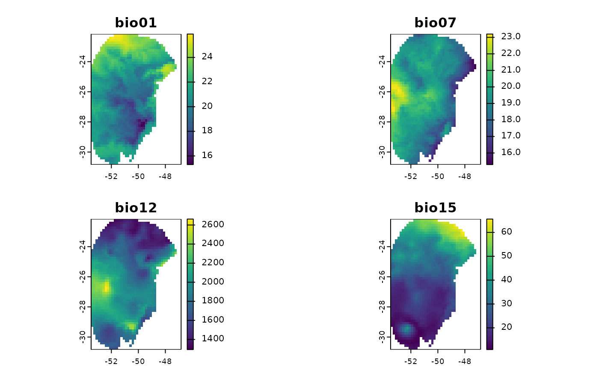

SpatRaster Representing Future Conditions (2041-2060, SSP585, GCM: ACCESS-CM2)
Source:R/data.R
future_2050_ssp585_access.RdA raster layer containing bioclimatic variables representing future climatic
conditions (2041-2060) based on the ACCESS-CM2 General Circulation Model
under the SSP585 scenario. The variables were obtained at a 10 arc-minute
resolution and masked using the m region provided in the package. Data
sourced from WorldClim: https://worldclim.org/data/cmip6/cmip6climate.html
Value
No return value. Used with function rast to
bring raster variables to analysis.
Examples
future_2050_ssp585_access <- terra::rast(system.file("extdata",
"wc2.1_10m_bioc_ACCESS-CM2_ssp585_2041-2060.tif",
package = "kuenm2"))
terra::plot(future_2050_ssp585_access)
